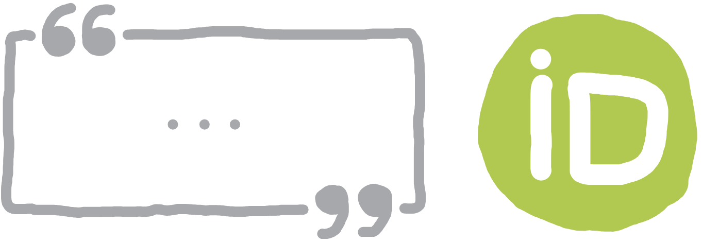
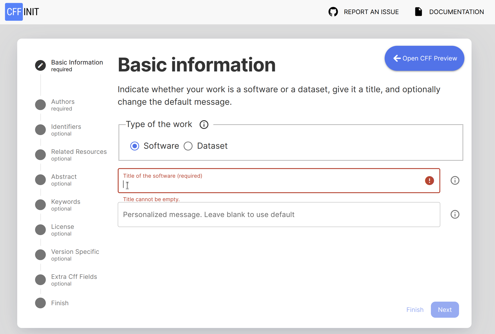
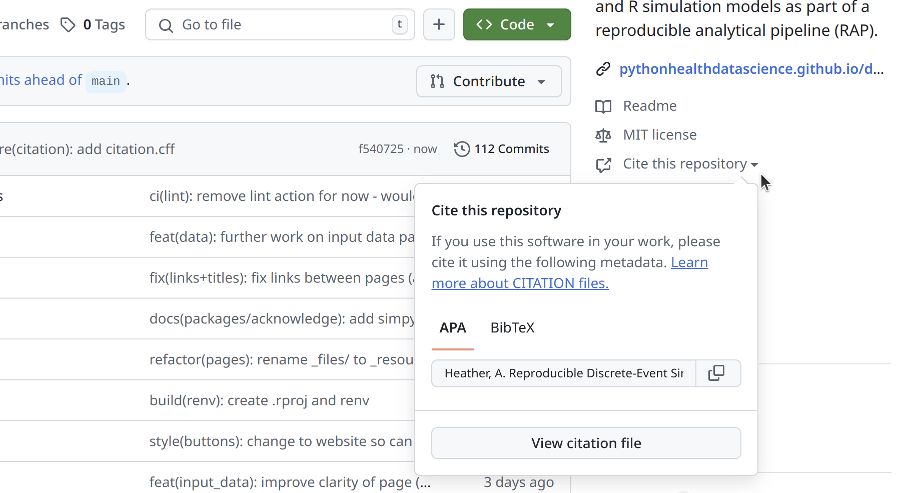
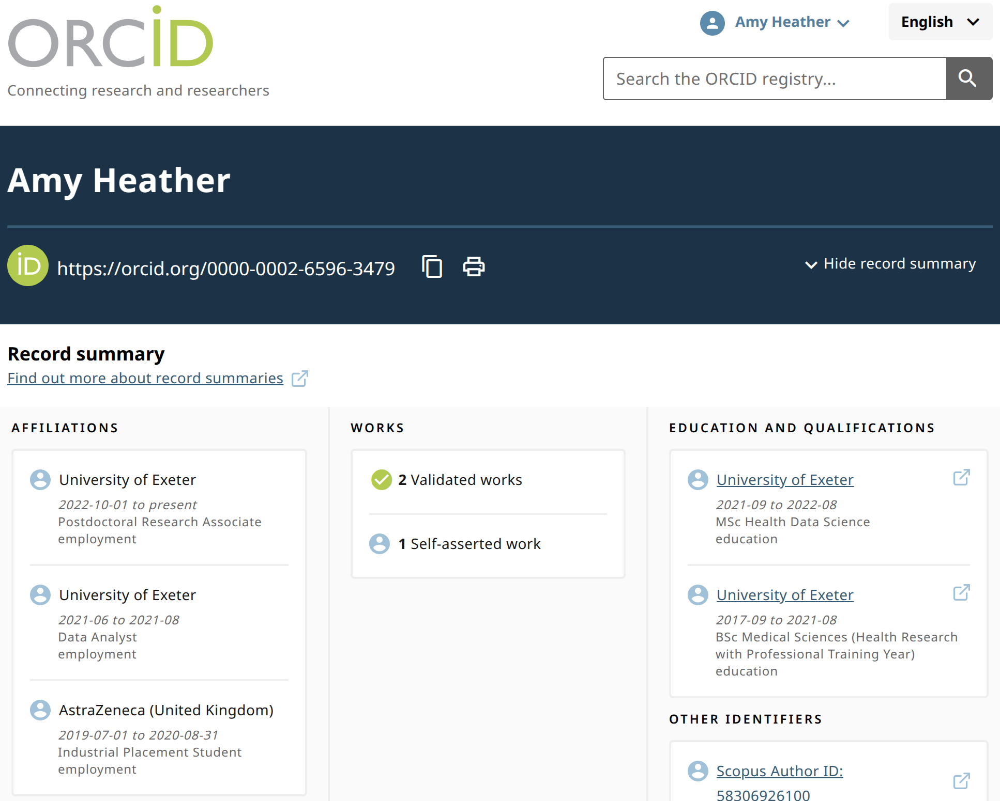

Citation
🎯 Objectives
This page explains why and how to provide citation instructions in your simulation repository.
- ❓ Why provide citation information?
- 📝 How to provide citation information
- 💬 Using multiple citation methods: Help different users find citation details, wherever they look.
- 🤝 Citing and acknowledging others
- 📎 Further information
🔗 Reproducibility guidelines
While not directly meeting specific criteria, this page supports good scientific practice and reproducibility by making sure that software and datasets are citable, discoverable, and properly attributed.

❓ Why provide citation information?
🛡️ Protects yourself and collaborators
Make sure you (and your collaborators) are recognised as the primary creators of the work.
📢 Encourages others to cite you
When you make citation details easy to find and follow, others are more likely to cite your work. It makes it easier for them to do. Also, many people may not realise that non-traditional research outputs like software should be cited, so including explicit guidance helps educate and encourage users to give you credit.
✅ Ensures accurate citation
Without citation instructions, others may only know your GitHub username. Therefore, it is important to provide all the correct details for a complete and accurate citation: full names, institution, ORCID iDs, software title, DOIs, etc.
📬 Provides contact information
Including your name and contact details in the citation information makes it easy for others to reach you. This can lead to new opportunities for collaboration, feedback, or questions about your work.
🤝 Recognises contributors
Explicitly list and acknowledge everyone who played a role in the project (including minor contributions). There are structured frameworks which can be used to specify roles, like the Contributor Role Taxonomy (CRediT) for research projects.
For CITATION.cff files…
🗄️ Used when archiving
If you archive your work using Zenodo, it will use the metadata from your
CITATION.cfffile to populate the archived record.
🔗 Integrates with reference managers
A
CITATION.cfffile can be converted to BibTeX or directly imported into reference managers like Zotero.
📝 How to provide citation information
CITATION.cff
A CITATION.cff file is a plain text file with a standard structure to share citation metadata for software or datasets.
The easiest way to create this file is using the cffinit web application. It will guide you through the required information, and generate a CITATION.cff file at the end.

As an example, the CITATION.cff from the repository for this book:
# This CITATION.cff file was generated with cffinit.
# Visit https://bit.ly/cffinit to generate yours today!
cff-version: 1.2.0
title: "DES RAP Book: Reproducible Discrete-Event Simulation in Python and R"
message: >-
If you use this software, please cite it using the
metadata from this file.
type: software
authors:
- given-names: Amy
family-names: Heather
email: a.heather2@exeter.ac.uk
affiliation: University of Exeter
orcid: 'https://orcid.org/0000-0002-6596-3479'
repository-code: 'https://github.com/pythonhealthdatascience/des_rap_book'
abstract: >-
Step-by-step guide for building Python and R simulation
models as part of a reproducible analytical pipeline
(RAP).
keywords:
- reproducible
- python
- r
- simpy
- simmer
- rap
license: MIT
CITATION.cff files are supported by Zenodo, Zotero and GitHub.
Zenodo: If use Zenodo-GitHub integration to archive on Zenodo, Zenodo will use the information in
CITATION.cffto populate the archive entry.Zotero: The Zotero reference manager uses
CITATION.cffwhen importing the repository as a reference.GitHub: Adds a “Cite this repository” button to the sidebar, which provides APA and BibTeX citations (based on the
CITATION.cfffile), and links to the file.

README.md
You should include clear citation instructions in your documentation - typically in your README.md. There are two common approaches:
1. Point to a citation files (e.g. CITATION.cff or files within the package).
## Citation
To cite this work, see the `CITATION.cff` file in this repository or use the "Cite this repository" button on GitHub.2. Provide citation details directly.
## Citation
To cite this work, use:
Heather, A. (2025). Reproducible Discrete-Event Simulation in Python and R. https://github.com/pythonhealthdatascience/des_rap_bookWithin the package
If you have structured your model as a package, then you can include some citation instructions within the package.
Depending on your package manager, you can include citation and author details in several ways…
Flit: Our tutorial used this as it is a very basic minimalist package manager. It had __init.py and pyproject.toml files. We can amend the pyproject.toml to add some citation information as follows:
[build-system]
requires = ["flit"]
build-backend = "flit_core.buildapi"
[project]
name = "simulation"
dynamic = ["version", "description"]
authors = [
{ name = "First Last", email = "firstname.lastname@example.com" }
]Poetry: Another popular manager, this has project details within pyproject.toml like so:
[tool.poetry]
name = "simulation"
version = "0.1.0"
authors = ["First Last <firstname.lastname@example.com>"]
readme = "README.md"The DESCRIPTION file can include the author full names, emails and roles using the Authors@R field. Example:
Authors@R: c(
person(
"First", "Last",
email = "firstname.lastname@example.com",
role = c("aut", "cre")
)
)You can also create a CITATION file within the inst/ directory by running usethis::use_citation(). This will create a blank file:
bibentry(
bibtype = "Article",
title = ,
author = ,
journal = ,
year = ,
volume = ,
number = ,
pages = ,
doi =
)
We can then populate it with citation information for our project - for example:
bibentry(
bibtype = "Manual",
title = "Discrete-Event Simulation Model for XYZ",
author = person("First", "Last", email = "firstname.lastname@example.com", role = c("aut", "cre"), comment = "ORCID: 0000-0000-0000-0000"),
organization = "Example Institute",
year = 2025,
note = "Version 0.1.0. A discrete-event simulation (DES) model template for the XYZ system or process.",
url = "https://github.com/example/des-xyz-model"
)When users run citation("yourpackagename"), this information gets displayed.
The cffr package can be handy if you are maintaining a CITATION.cff.
cffr::cff_write(): createsCITATION.cffbased on yourDESCRIPTIONandCITATIONfiles.cffr::cff_gha_update(): installs a GitHub action which will keep theCITATION.cffup-to-date.
ORCID iDs
An ORCID iD (Open Researcher and Contributor ID) is a unique persistent identifier for researchers and contributors. It distinguishes you from others with similar names and ensures your work is correctly attributed to you, even with name changes, different name formats, or moves between institutions. You can register for an iD at https://orcid.org/.

You can then include the ORCID iDs of contributors to your project within your citation files (e.g. CITATION.cff) - and within your README.md. This ensures all contributors are uniquely and accurately identified, and links to their scholarly profiles.
In your README.md, you can display ORCID iDs using badges, icons, or simple links. For example, using a badge:
[](https://orcid.org/0000-0002-6596-3479)Which renders as:

💬 Using multiple citation methods
We’ve described several ways to provide citation information to users. We recommend using several of these methods. This is because different users look for citation information in different places. For example:
GitHub users may be familiar with
CITATION.cfffiles and the sidebar “Cite this repository” button.Many people look for citation details directly in the
README.md.
- R users often expect a
CITATIONfile.
If you’re concerned about duplication, you can maintain a single up-to-date source (such as CITATION.cff) and simply direct users to it from your README.md or other documentation.
For R packages, tools like cffr can automate the creation and maintenance of a CITATION.cff file.
Since many users are still unsure how (or even whether) to cite software, making citation information visible in multiple places increases the likelihood your work will be credited properly.
🤝 Citing and acknowledging others
Within your code
When writing your simulation and analysis code, it’s common - and encouraged - to use or adapt code from other sources. Proper attribution is good practice and often required by open source licenses.
Before using code from others, you should check the licence is open and compatible with your project. For example, code under the GPL licence requires your project to also be GPL-licensed if you copy or adapt it directly.
According to guidance from The Turing Way and the R Packages book, you only need to change your project’s license if you embed code from another package (i.e. copy+and+paste code), or if it is distributed as a binary with the work (i.e. bundled and stored with the work). Merely importing and using packages from conda/PyPI/CRAN does not make your work a derivative, so you can use a permissive license if you wish.
To attribute code, you should follow the Creative Commons TASL approach:
- Title: Name of the work (e.g. repository name).
- Author: Original author(s).
- Source: Where it can be found (e.g. GitHub URL).
- Licence: Licence used by the authors.
You should specify if the code is an exact copy or if it has been adapted. Optionally, you can include further details like the version, commit has, or retrieval date.
You should include attributions alongside the code - for example, in a function/class docstring. For very small snippets, in-line comments may suffice. If lots of code uses the same source, you could include it as a module docstring, and then refer back to it in the class docstrings.
In this example from pydesrap_mms, we have used a module docstring which we refer to from our class docstrings:
"""Selecting the number of replications.
Credit:
> These functions are adapted from Tom Monks (2021) sim-tools:
fundamental tools to support the simulation process in python
(https://github.com/TomMonks/sim-tools) (MIT Licence).
> In sim-tools, they cite that their implementation is of the "replications
algorithm" from: Hoad, Robinson, & Davies (2010). Automated selection of
the number of replications for a discrete-event simulation. Journal of the
Operational Research Society. https://www.jstor.org/stable/40926090.
Licence:
This project is licensed under the MIT Licence. See the LICENSE file for
more details.
"""
...
class OnlineStatistics:
"""
Computes running sample mean and variance (using Welford's algorithm),
which then allows computation of confidence intervals (CIs).
...
Acknowledgements:
- Class adapted from Monks 2021.
"""
...Example from rdesrap_mms:
#' Calculate the resource utilisation
#'
#' ...
#'
#' Credit: The utilisation calculation is adapted from the
#' `plot.resources.utilization()` function in simmer.plot 0.1.18, which is
#' shared under an MIT Licence (Ucar I, Smeets B (2023). simmer.plot: Plotting
#' Methods for 'simmer'. https://r-simmer.org
#' https://github.com/r-simmer/simmer.plot.).
#'
#' ...
calc_utilisation <- function(resources, groups = NULL, summarise = TRUE) {
# ...
}You can also add an “Acknowledgements” or “Attributions” section in your README.md (or other documentation/a dedicate file), listing sources and where their code is used.
In this example from pydesrap_mms, we used a table to present the sources and files containing code from those sources:
Acknowledgements
This repository was developed with thanks to several others sources. These are acknowledged throughout in the relevant notebooks/modules/functions, and also summarised here:
| Source | Find out more about how it was used… |
|---|---|
| … | |
| NHS Digital (2024) RAP repository template (https://github.com/NHSDigital/rap-package-template) (MIT Licence) | simulation/logging.pydocs/nhs_rap.md |
| Sammi Rosser and Dan Chalk (2024) HSMA - the little book of DES (https://github.com/hsma-programme/hsma6_des_book) (MIT Licence) | simulation/model.pynotebooks/choosing_cores.ipynb |
| … |
In this example from rdesrap_mms, we used a table to present the sources and files containing code from those sources:
Acknowledgements
This repository was developed with thanks to a few others sources. These are acknowledged throughout in the relevant scipts, and also summarised here:
| Source | Find out more about how it was used… |
|---|---|
| Ucar I, Smeets B (2023). simmer.plot: Plotting Methods for ‘simmer’. https://r-simmer.org. https://github.com/r-simmer/simmer.plot. | R/get_run_results.R |
| Tom Monks (2021) sim-tools: fundamental tools to support the simulation process in python (https://github.com/TomMonks/sim-tools) (MIT Licence). Who themselves cite Hoad, Robinson, & Davies (2010). Automated selection of the number of replications for a discrete-event simulation (https://www.jstor.org/stable/40926090), and Knuth. D “The Art of Computer Programming” Vol 2. 2nd ed. Page 216. |
R/choose_replications.R |
Within your reports
The FORCE11 Software Citation Principles recommend that software citations should:
- Be treated with the same importance as other research products (e.g. papers, data).
- Give credit and attribution to software authors and contributors.
- Include unique, persistent identifiers (such as DOIs) and version information.
- Make the software findable and accessible.
- Specify exactly which version was used, for reproducibility.
You don’t need to cite every single package or dependency - these will be listed in your environment files in your repository. You should however cite the main software/resources used for your analysis.
The software authors will likely provide citation instructions in their documentation or a citation file. If none are provided, you should include:
- Software name
- Version number
- Authors or project team
- Year of release
- Persistent identifier (DOI or archive) (if available)
- Repository URL (e.g. GitHub, GitLab)
- Access date (if no version or release date is available)
For example:
The simulation was developed in Python X.X.X [cite] using SimPy X.X.X [cite], with the model and analysis structured based on examples from the DES RAP Book [cite].
The simulation was developed in R X.X.X [cite] using simmer X.X.X [cite], with the model and analysis structured based on examples from the DES RAP Book [cite].
📎 Further information
- “What is a CITATION.cff file?” from Stephan Druskat 2023.
- “Software citation principles” by Smith et al. 2016.
- “Making Research Objects Citable” from the Turing Way Community.
💬 Comments